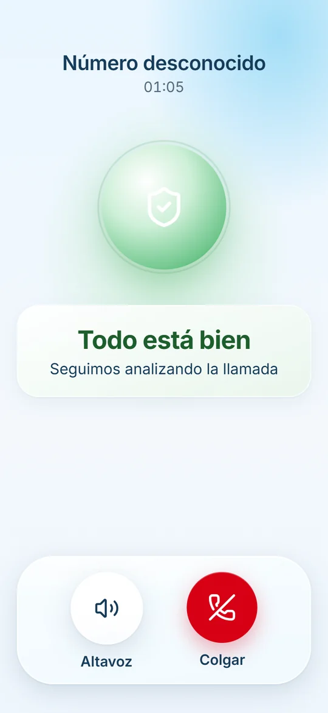
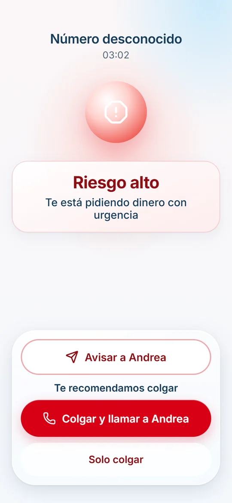
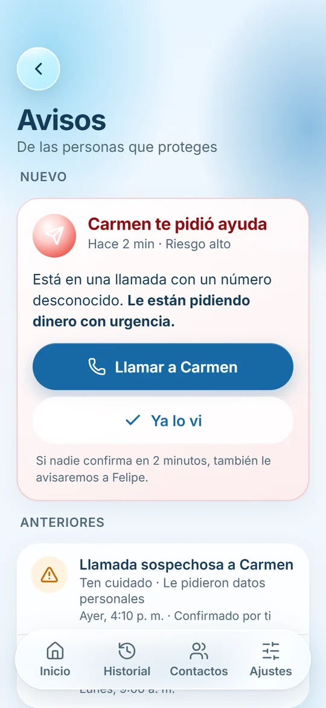

Alcance
Casos de uso, requisitos y hoja de ruta
Qué hace hoy GuardianMesh en la rama development y qué queda para la Fase 2, sin sobredimensionar.
Diseño UX/UI y Flujo de Pantallas (Accesibilidad)
GuardianMesh se diseñó pensando en la persona adulta mayor: debe poder entender qué pasa en una llamada sin leer texto pequeño ni tener que adivinar qué tocar.
Alto contraste
Texto oscuro sobre fondos claros con contraste AA, y tamaño de letra base grande.
Botones táctiles claros
Áreas de toque de 56 px, una acción principal por pantalla y etiquetas en español sencillo.
Semáforo que no depende del color
Verde, ámbar y rojo siempre llevan texto, ícono, voz y vibración configurables.
Prototipo visual completo. Abre el flujo de pantallas diseñado para el proyecto (editable: cambia el href si el enlace cambia).






Nota: estas pantallas y el prototipo corresponden al flujo de diseño UX/UI, distinto de las capturas de la build compilada de Android.
▶ Ver simulación 3D con la app real
Casos de uso principales
Recibir una llamada protegida
El usuario protegido acepta una llamada de un contacto y ve el semáforo en tiempo casi real.
Verificar a un familiar
En ámbar o rojo, responde la pregunta secreta acordada con ese contacto.
Avisar a la Red de Confianza
Cuelga y avisa a su contacto de confianza; el aviso llega por WebSocket y queda en DynamoDB si está desconectado.
Gestionar contactos
Invitar por correo, aceptar, eliminar y marcar hasta 3 contactos de confianza.
Historias de usuario implementadas
Identificadores citados en el código y en las pruebas de la rama development.
| HU | Descripción | Evidencia | Estado |
|---|---|---|---|
| HU-04 | Desafío familiar con secreto compartido (HMAC-SHA256) | guardianmesh_challenge/desafio.py; /challenge | Implementada |
| HU-16 | Orquestador de riesgo: reglas duras, fusión 60/40, histéresis 15 s | guardianmesh_orchestrator/orquestador.py | Implementada |
| HU-17 | Agente de intención y urgencia (Nova Lite + fallback regex) | guardianmesh_intent/ | Implementada |
| HU-19 | Pregunta de seguridad por contacto | Pantalla SecurityQuestionScreen; /contacts/{id}/security | Implementada |
| HU-21 | Biometría vocal por huella (RMS/ZCR) | guardianmesh_voice/analizador.py | Heurística |
| HU-22 | Detección de voz sintética por planitud | guardianmesh_voice/analizador.py | Heurística |
| HU-23 | Cascarón accesible de la persona adulta mayor | AppShell, CarmenHomeScreen | Implementada |
| HU-26 | En ámbar o rojo, colgar y llamar al contacto de confianza | CallProvider.tsx | Implementada |
También implementados: login con Google, registro con código por correo, directorio de contactos, historial de llamadas, avisos a la Red de Confianza por WebSocket y app Android con Capacitor.
Alcance MVP actual vs. Roadmap Fase 2
| Tema | MVP actual | Roadmap Fase 2 |
|---|---|---|
| Llamadas | Audio 1:1 por WebRTC dentro de la app | Llamadas por red telefónica (PSTN) |
| Avisos | WebSocket + DynamoDB (pendientes al reconectar) | Notificaciones push (FCM/APNs) y SMS |
| Biometría y anti-spoofing | Heurísticas estadísticas RMS/ZCR | Embeddings de locutor y modelo entrenado |
| Transcripción | Fragmentos de ~8 s cada ~6 s (casi tiempo real) | Streaming continuo |
| NAT / conectividad | STUN público (VITE_ICE_SERVERS) | Servidor TURN propio |
| Despliegue | dev completo; prod con Cognito, gateway, KMS, datos y secretos | Señalización, riesgo y avisos en prod |
| Perímetro | Throttling + validación JWT; waf_enabled = false | WAF activo (requiere migrar a REST API) |
| Plataformas | PWA y Android (APK debug y release firmado) | Publicación en tienda e iOS |
Límites conocidos del MVP: el análisis lo ve solo quien recibe la llamada; las frases escritas del laboratorio (VITE_RISK_LAB) son una entrada de pruebas y no cambian el semáforo real; una sola región (us-east-1).
Hoja de ruta
Ahora
Hecho Riesgo en llamada, desafío familiar, historial, avisos y APK.
Siguiente
Pendiente Reejecutar pruebas en Python 3.12, CI de tests en api y communications, limpiar rutas sin uso del front.
Fase 2
Planeado PSTN, push/SMS, embeddings de voz, TURN, WAF y prod completo.